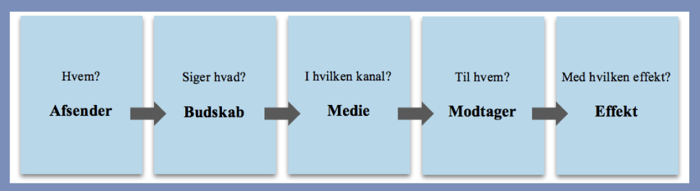

Kommunikationsteori
Kommunikationsteori, hvad er det?
Kommunikation er vigtigt, specielt når det handler om at komme ud med et budskab, der skal gøres mange overvejelser, når man vil frem med et budskab. Hvem er budskabet til og hvordan skal det se ud?
Laswells formel
Er et værktøj til at analysere og forstå medier, det kan for eksempel være TV. Den skal være med til at afgøre hvilket formål kommunikationen mellem afsender og modtager har. Den kan også bruges til hvordan man selv skal kommunikere et budskab ud til en modtager. Laswells formel bliver brugt rigtigt meget i sociale medier og marketing. Modellen bruges bl.a. også til at finde ud af hvordan et bestemt budskab kommer ud til den rette modtager.
Laswells model består af 5 elementer som skal være med til afgøre hvem og hvad et budskab er rettet i mod.
De 5 elementer er: Afsender, Budskab, Medium/ Kanal, Modtager og Effekt.
Når man læser modellen, skal den forstås sådan her: Hvem siger hvad gennem hvilken kanal til hvem og med hvilken effekt?
Jakob´s Law
Er en lov indenfor Internet User Experience. Selve loven beskriver hvordan tingene er, loven siger at der er brugere som bruger mange timer på andre hjemmesider end på din hjemmeside. Når menneskerne bruger så meget tid, så har de en forståelse for hvordan en hjemmeside skal virke og hvordan designet er.
Hvis din hjemmeside er ens som de andre så vil brugeren ikke fokusere på selve designet og hvordan den er laver, fokusere mere på hvordan tingene fungere som for eksempel dine produkter, dit indhold, dine tjenester, dine tilbud og dit budskab og det er også det du ville havde de skulle.
Hvis du tænker jeg vil ik gøre ligesom alle de andre designer og bygge din hjemmeside op på samme måde så den er nem at bruges, så bryder du Jakob´s Law fordi så vil brugerne være helt forvirret.
På grund af de ved ikke hvordan selve hjemmesiden virker, så gider de ikke bruge deres tid på din hjemmeside og de finder en anden som de kender i forvejen.
Man skal huske og følge op på hvad der sker rundt omkring design trends, hvad folk kan lide at bruge og hvad andre hjemmesider laver. På grund af hvis du ik gør det så mister du en kunde.
På grund af brugere bruger det meste af deres tid på andre hjemmesider end din hjemmeside.
Aida modellen
AIDA-modellen kender vi fra dansk i folkeskolen, det er en model man bruger til at analysere og forstå reklamer. Det handler primært om hierarki.
AIDA modellen ser således ud:

Det er en god ting at have i mente når vi producerer indhold til sociale medier, så kan vi dobbelttjekke om vores indhold opfylder kriterierne for AIDA.
Hvad kan det?
Det kan bruges til at optimere i forhold til, brugeroplevelse i en produktion. Kan der arbejdes med teksten for at budskabet trækker anderledes i gennem.
Hvor kan jeg bruge det?
Man kan bruge det til hvis man bygger en hjemmeside, hvilke overvejelser bliver der gjort for at fremme et budskab til en bestemt målgruppe.